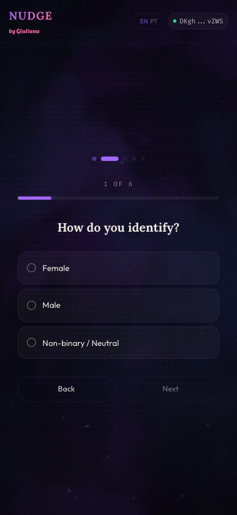
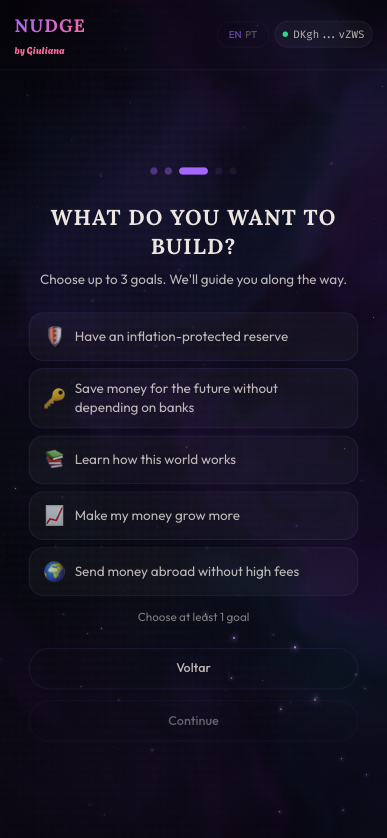
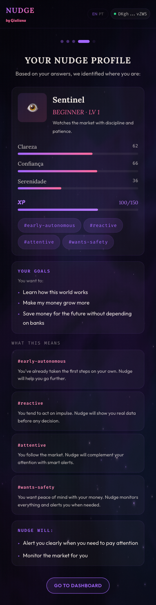
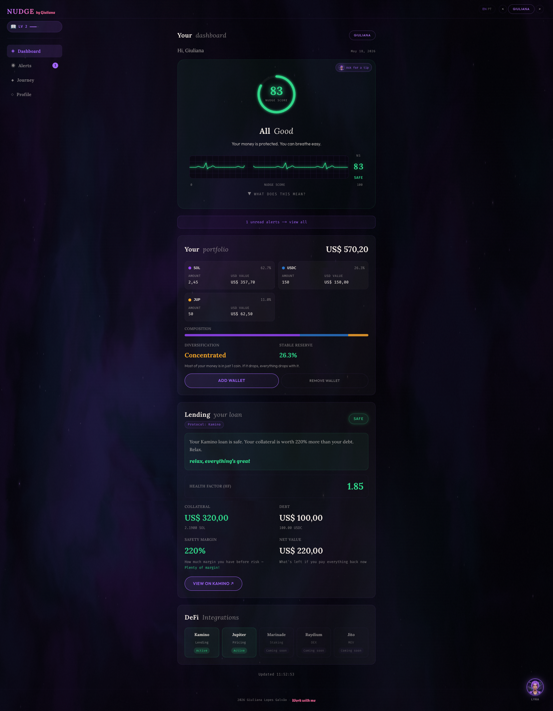
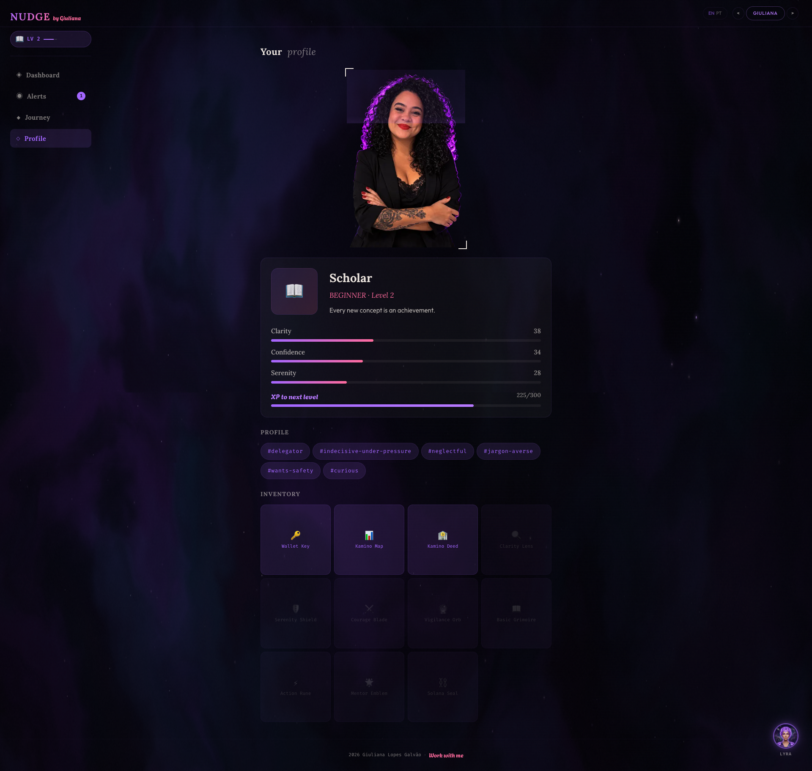
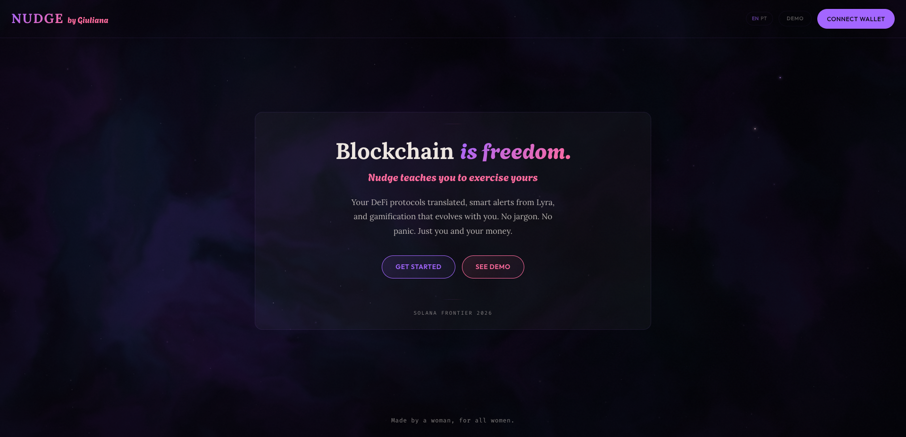

Nudge
Behavioral intelligence for DeFi lending — protecting users from themselves Inteligência comportamental para lending DeFi — protegendo usuários deles mesmos
"Nudge protects you from yourself." "Nudge protege você de você mesmo."— Core product philosophy — Filosofia central do produto
Built for Frontier. Construído para o Frontier.
Nudge was born during the Solana Frontier Hackathon 2026 — the largest global Solana competition of the year. The challenge: build something that solves a real problem for DeFi users on Solana. I identified a gap nobody was addressing — behavioral mistakes in lending protocols. Not a lack of tools, but a lack of protection from our own impulses.
Nudge nasceu durante o Solana Frontier Hackathon 2026 — a maior competição global Solana do ano. O desafio: construir algo que resolva um problema real para usuários DeFi na Solana. Identifiquei uma lacuna que ninguém estava endereçando — erros comportamentais em protocolos de lending. Não falta de ferramentas, mas falta de proteção contra nossos próprios impulsos.
10–20% lost to behavior, not strategy. 10–20% perdidos por comportamento, não estratégia.
DeFi users don't lose money because they pick bad protocols or use wrong strategies. They lose because they panic sell during crashes, ignore health factors until liquidation, and forget about positions for weeks. These are behavioral problems — and no existing DeFi tool addresses them.
Usuários DeFi não perdem dinheiro por escolher protocolos ruins ou usar estratégias erradas. Perdem porque vendem em pânico durante quedas, ignoram health factors até a liquidação e esquecem de posições por semanas. São problemas comportamentais — e nenhuma ferramenta DeFi existente os aborda.
"The biggest risk in DeFi isn't the protocol. It's the person using it." "O maior risco em DeFi não é o protocolo. É a pessoa usando."
Profile. Monitor. Nudge. Perfil. Monitoramento. Nudge.
A quiz maps your behavioral patterns into neurotags — how you react under pressure, your knowledge level, and your goals. Nudge adapts its voice to you. Um quiz mapeia seus padrões comportamentais em neurotags — como você reage sob pressão, seu nível de conhecimento e seus objetivos. Nudge adapta a voz para você.
Reads your Kamino lending positions in real time — health factor, collateral, debt. The dashboard shows your Nudge Score and portfolio health at a glance. Lê suas posições de lending Kamino em tempo real — health factor, colateral, dívida. O dashboard mostra seu Nudge Score e saúde do portfólio de relance.
When your health factor drops or market volatility spikes, Nudge alerts you in the tone that matches your profile — context, not fear. Quando seu health factor cai ou a volatilidade do mercado dispara, Nudge te alerta no tom que combina com seu perfil — contexto, não medo.
Quiz → neurotags → your voice. Quiz → neurotags → sua voz.
During onboarding, a quiz maps users to 14 behavioral neurotag categories across 5 dimensions: autonomy, pressure response, attention, knowledge level, and goals. Each answer generates tags like #delegator, #indecisive-under-pressure, or #wants-safety. The combination of tags is then weighted to resolve one of 4 communication profiles — the voice Nudge uses to talk to you.
Durante o onboarding, um quiz mapeia usuários em 14 categorias de neurotags comportamentais em 5 dimensões: autonomia, resposta à pressão, atenção, nível de conhecimento e objetivos. Cada resposta gera tags como #delegadora, #indecisa-sob-pressão ou #quer-segurança. A combinação de tags é ponderada para resolver um dos 4 perfis de comunicação — a voz que o Nudge usa para falar com você.
For example: a user who lets others set up their wallet (#delegator), freezes during market drops (#indecisive-under-pressure), rarely checks their portfolio (#neglectful), doesn't know DeFi jargon (#jargon-averse), but wants safety and is curious — each tag contributes weighted points. #delegator adds +3 gentle, #indecisive-under-pressure adds +4 gentle, #jargon-averse adds +4 gentle. Result: gentle voice wins with 13 points. This user becomes a Sentinel — and every message, alert, and recommendation adapts to their profile.
Por exemplo: um usuário que deixa outros configurarem sua wallet (#delegadora), congela durante quedas de mercado (#indecisa-sob-pressão), raramente checa o portfólio (#negligente), não conhece jargão DeFi (#avessa-a-jargão), mas quer segurança e é curiosa — cada tag contribui pontos ponderados. #delegadora soma +3 gentle, #indecisa-sob-pressão soma +4 gentle, #avessa-a-jargão soma +4 gentle. Resultado: voz gentle vence com 13 pontos. Essa usuária se torna uma Sentinel — e toda mensagem, alerta e recomendação se adapta ao perfil dela.
Reassuring, warm — avoids jargon. "Your money is protected. You can breathe easy."Tranquilizador, acolhedor — evita jargão. "Seu dinheiro está protegido. Pode respirar tranquila."
Supportive, growth-oriented. "Great work! Your portfolio is well balanced. Keep it up!"Apoiador, motivador. "Parabéns! Seu portfólio está equilibrado. Continue assim!"
Action-oriented, efficient. "Healthy position. Score 83/100. Comfortable margin."Orientado a ação, eficiente. "Posição saudável. Score 83/100. Margem confortável."
Data-driven, precise. "Score 83/100. Metrics within parameters. No intervention needed."Orientado a dados, preciso. "Score 83/100. Métricas dentro dos parâmetros. Sem intervenção necessária."



An AI that speaks your language. Uma IA que fala a sua língua.
Lyra is Nudge's conversational AI — a deterministic message engine that adapts every interaction to the user's neurotag profile. She answers questions about health factor, portfolio, XP, and DeFi concepts. She suggests follow-up topics based on a topic graph. And she rewards curiosity: exploring 3 topics in chat earns XP and an inventory item.
Lyra é a IA conversacional do Nudge — um motor de mensagens determinístico que adapta cada interação ao perfil de neurotags do usuário. Ela responde perguntas sobre health factor, portfólio, XP e conceitos DeFi. Sugere tópicos de follow-up com base em um grafo de tópicos. E recompensa a curiosidade: explorar 3 tópicos no chat ganha XP e um item de inventário.
The voice changes everything. When a gentle user's position is safe, Lyra says "Your money is protected. You can breathe easy." The same data, for a technical user: "Score 83/100. Metrics within parameters. No intervention needed." When action is needed, gentle users see "Better protection" while direct users see "Rebalance allocation." Same system, different humans.
A voz muda tudo. Quando a posição de um usuário gentle está segura, Lyra diz "Seu dinheiro está protegido. Pode respirar tranquila." Os mesmos dados, para um usuário technical: "Score 83/100. Métricas dentro dos parâmetros. Sem intervenção necessária." Quando ação é necessária, usuários gentle veem "Melhor proteção" enquanto direct veem "Rebalancear alocação." Mesmo sistema, humanos diferentes.
#delegator lowers confidence by 20, #calm-under-pressure raises serenity by 25, #attentive raises clarity by 10. Your character reflects your real behavior.Neurotags modificam stats base: #delegadora reduz confiança em 20, #calma-sob-pressão aumenta serenidade em 25, #atenta aumenta clareza em 10. Seu personagem reflete seu comportamento real.Nudge Score: 0 to 100. Nudge Score: 0 a 100.
The Nudge Score is a composite health metric built from 4 components: diversification (inverted Herfindahl index), stablecoin ratio (ideal 10–30%), concentration risk (max single-token allocation), and Kamino health (health factor thresholds). For users with active Kamino loans, lending health dominates at 45% of the score. Without a loan, portfolio metrics split the weight evenly.
O Nudge Score é uma métrica de saúde composta por 4 componentes: diversificação (índice Herfindahl invertido), proporção de stablecoins (ideal 10–30%), risco de concentração (alocação máxima em um token) e saúde Kamino (limites de health factor). Para usuários com empréstimos Kamino ativos, a saúde do lending domina com 45% do score. Sem empréstimo, as métricas de portfólio dividem o peso igualmente.
The score drives 3 zones: safe (≥65), attention (35–64), and danger (<35). Each zone changes the entire dashboard: hero title, Lyra's tone, action recommendations, and alert urgency — all personalized to your communication profile.
O score define 3 zonas: safe (≥65), attention (35–64) e danger (<35). Cada zona muda todo o dashboard: título do hero, tom da Lyra, recomendações de ação e urgência dos alertas — tudo personalizado para seu perfil de comunicação.



Cypherpunk meets behavioral care.Cypherpunk encontra cuidado comportamental.
Deep dark palette with neon teal accents. Chamfered corners, scanline effects, and glow cards create a cypherpunk aesthetic — while the behavioral layer uses warm, human language to build trust and reduce anxiety.
Paleta dark profunda com acentos teal neon. Cantos chanfrados, efeitos de scanline e cards com brilho criam uma estética cypherpunk — enquanto a camada comportamental usa linguagem humana e acolhedora para construir confiança e reduzir ansiedade.
Dark #050408 · Teal #00CCBB · Plum #6B4FA0 · Alert #FF6B6B
Orbitron (titles) · Rajdhani (nav) · Fira Code (mono) · Inter (body)
n2- namespace · glow cards · neon buttons · gradient text · status badges
Built with modern tools.Construído com ferramentas modernas.
App Router, Turbopack, Server Components, API Routes
Tailwind CSS v4, cypherpunk design system, i18n (PT-BR)
@kamino-finance/klend-sdk — health factor, collateral, debt reading
@solana/web3.js, wallet-adapter, Memo Program, Helius RPC
Real-time token prices, volatility detection, portfolio valuationPreços de tokens em tempo real, detecção de volatilidade, avaliação de portfólio
Full type safety across components, hooks, and API routesSegurança de tipos completa em componentes, hooks e rotas de API
How Nudge works. Como o Nudge funciona.
On wallet connect, Nudge reads lending positions from Kamino's klend-sdk and token prices from Jupiter Price API. The behavioral quiz generates a neurotag profile that determines how the dashboard communicates risk. Everything runs client-side with Vercel serverless API routes for data fetching.
Ao conectar a wallet, Nudge lê posições de lending do klend-sdk do Kamino e preços de tokens da Jupiter Price API. O quiz comportamental gera um perfil de neurotags que determina como o dashboard comunica risco. Tudo roda no client-side com rotas de API serverless da Vercel para busca de dados.
"I designed and built this entire product solo — from the behavioral profiling system and RPG gamification to the Kamino SDK integration, cypherpunk UI, and personalized communication engine." "Projetei e construí todo este produto solo — do sistema de perfil comportamental e gamificação RPG à integração com Kamino SDK, UI cypherpunk e motor de comunicação personalizada."
this project?Interessado
neste projeto?